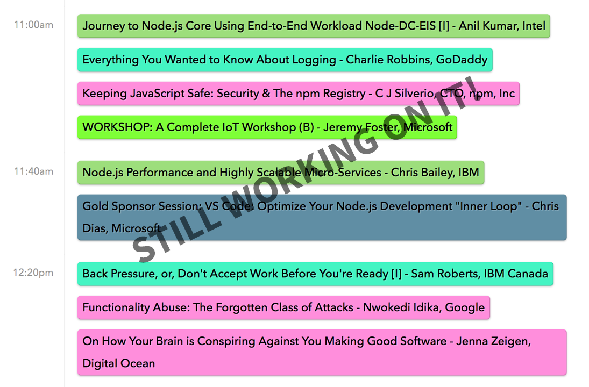

NodeJS Conference 2017
Thoughts and notes
- General notes
- Venue
- Talks
- Dana
- Ali
General notes
We should formulate these general notes together. Maybe have to slides if our impression of the conference is very different.
- Very sponsor oriented
- 6 opening keynotes and 7 closing notes (usually there's one opening and one closing)
- Most of the talks were promoting one module or other
- Very fast paced: 30 minutes sessions with 10 minutes breaks in between
- Refreshing to see diversity among speakers, note speakers, and participants
- Sad to see lots of inexperiences presenters
- Code &smp; Learn session !!! dissapointing !!!!
Venue
- Canada Place in the heart of Vancouver
- Vancouver city is an awesome blend of nature and cosmopolitan
- Everybody should visit at least once
- Should add some pretty pictures of the city
- Maybe mention something about the people too


The sessions

Ali's talks
- Logging - Winston was updated to use streams, use `winston@next`!
- Microservices - use our yeoman nodeserver generator `yo nodeserver`!
- Don't Starve the Event Loop - find a balence between all the ways to optimize
- JS Ecosystem - tips and tricks within JS and node
- Hooray Arrays - Everything and more about arrays
- Future is Serverless, what that means for node - use funcpack to configure web pack on a project
- Memory Leaks - how to debug a memory leak
- Closures - how to and when to
- Async Hooks - a module to help you track async functions
- *Keynotes - what's next for node
Your Brain is Conspiring Agasint You
Tips and tricks to help make us better developers
http://jenna.is/slides/at-nina.pdf
- Take breaks!
- Ask questions that counter our hypothesis
- Debug with a partner
- Bad at estimating - under/over
- Motivated by loss
- Helpless to the processing power of our brains
- Be more empathetic
- Reliant on our own examples
- Ikea Effect - don't re-invent the wheel
- Coctail Party Effect - process everything
- Imposter Syndrome (sucessful women)
Kill All Humans
How to deal with npm versions, releases, and updates
- Semantic Versioning
- breaking.feature.fix
- Break versions not code!
- Semantic Release - give you a rigid setup for versioning and releasing
- `npm outdated`
- greenkeeper.io - dependency management with travis CI
- Do not do any security updates without up-to-date dependencies
- Create a schedule for dependency updates
The State of Node Security
Where node stands security-wise
- Examples of security attacks:
- Directory traversal
- Cross-site scripting (angular)
- typosquatting
- Regular Expression denial of service
- Create public facing disclosure policy
- Create a `security.txt` file that defines how users can report security issues
- Deprecate the version with the security issue
- Use Snyk, or nsp
Dana's talks
Conclusion
We gotta work on it together. Personally I'd say something along the line that NodeJS Interactive is still in its infancy and they have to get it together if we want to go to another conference again. Or maybe say something about one of us's participation as a presenter. Not to be mean, but our presentation skills are much better and sugarcoat would make a great presentation even if it's not final.